IT Takımı, 2017 yılında EESTEC'in özünü (hard skilzz) korumak adına kurulmuş ve hala varlığını sürdüren bir birimdir. It is the team responsible for maintaining the IT assets and servers of EESTEC International and provide IT solutions for our association's needs. Ayrıca coding night'larının konseptinin diğer LC'lerden uluslararası etkinliğe gelen katılımcılara anlatılamamasıyla da bilinir.
Coordies
Mert Yerekapan
Bilgisiyar Mühendisliği
Hikmet Tüfekçi
Matematik Müh
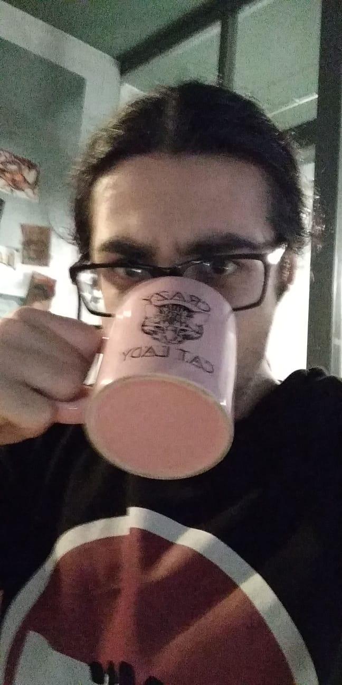
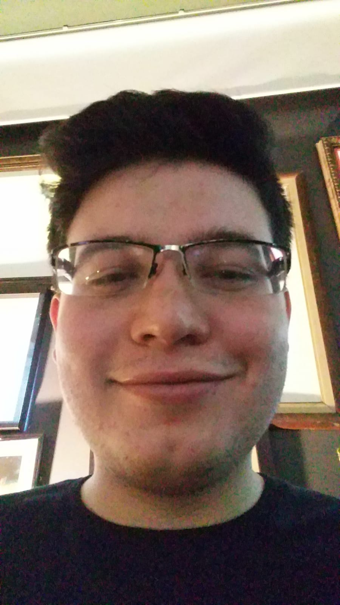
Members
Ece Sancar
Bilgisiyar Mühendisliğis
Çağlar Yılmaz
Uzay Mühendisliği
Görki The Driver
Kontrol ve Otomasyon Mühendisliği
Kaan Çorum
Matematik Mühendisliği
Efkan The Pala
Elektonik ve Haberleşme Mühendisliği/ Güzel kızlar eklesin @efkanpala ;)
İrem Sezdi
Uzay Mühendisliği
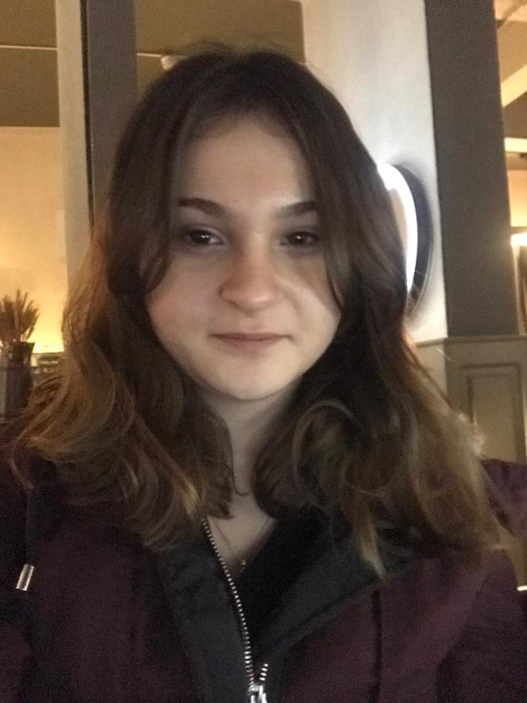
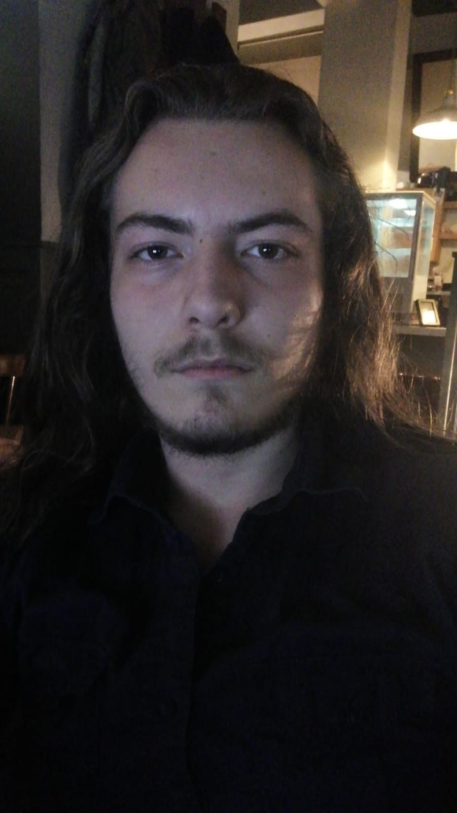
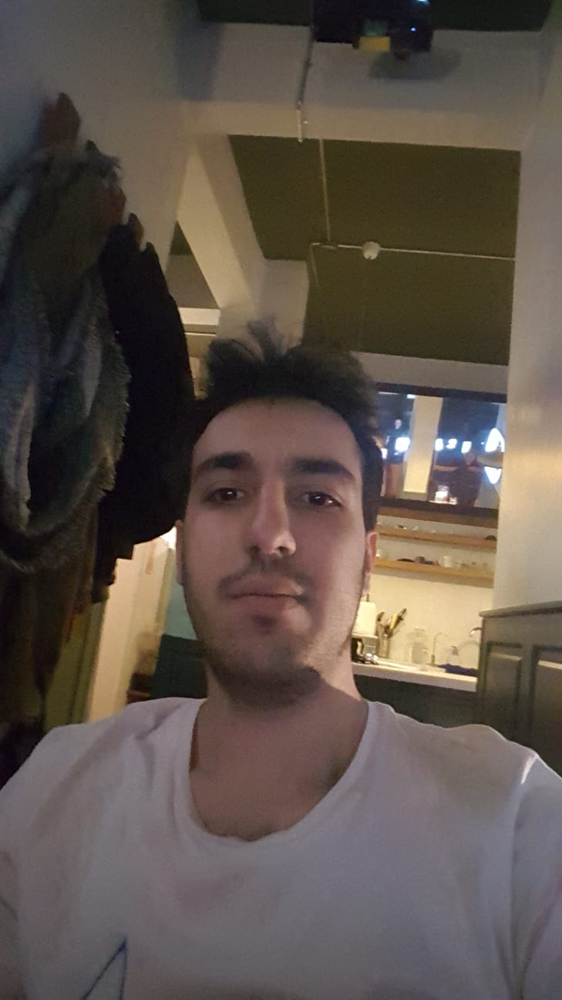
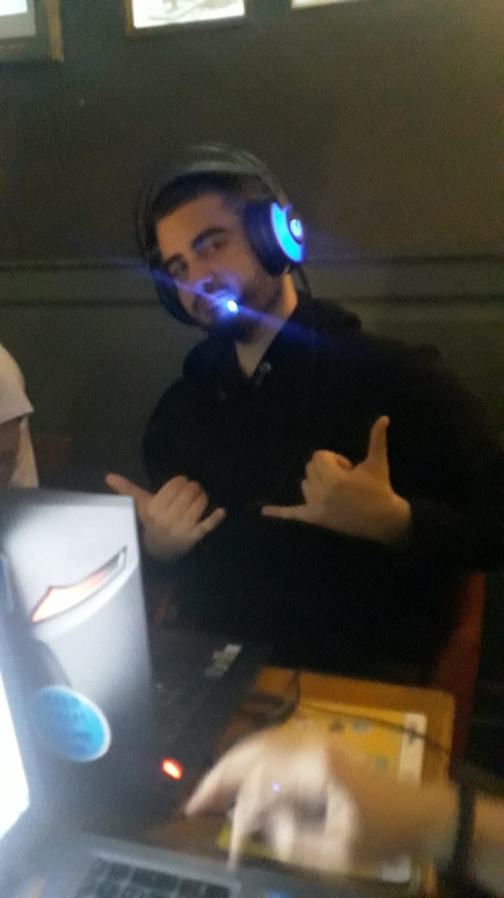
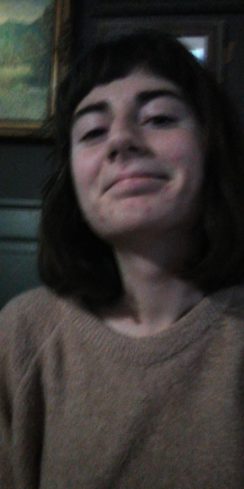
Doğa Karaca
MatMüh
Ezgi Kepenek
Metalurji ve Malzeme Mühendisliği
Ahsen Varıcıoğlu
Bilgisayar Mühendisliği
Alperen Bahar
Elektronik Haberleşme Mühendisliği
Merve Şanlı
İşletme Mühendisliği
Ela Jamazi
Bilgisayar Mühendisliği
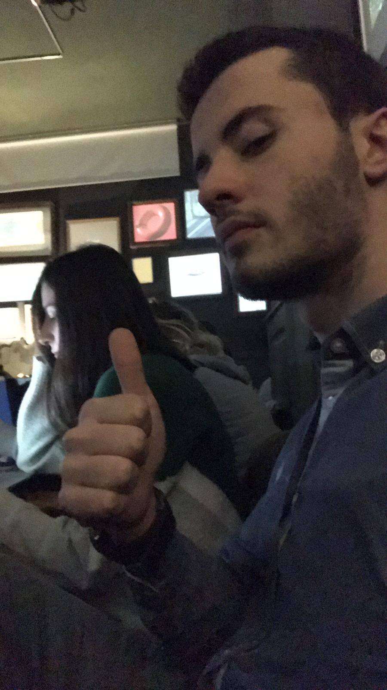
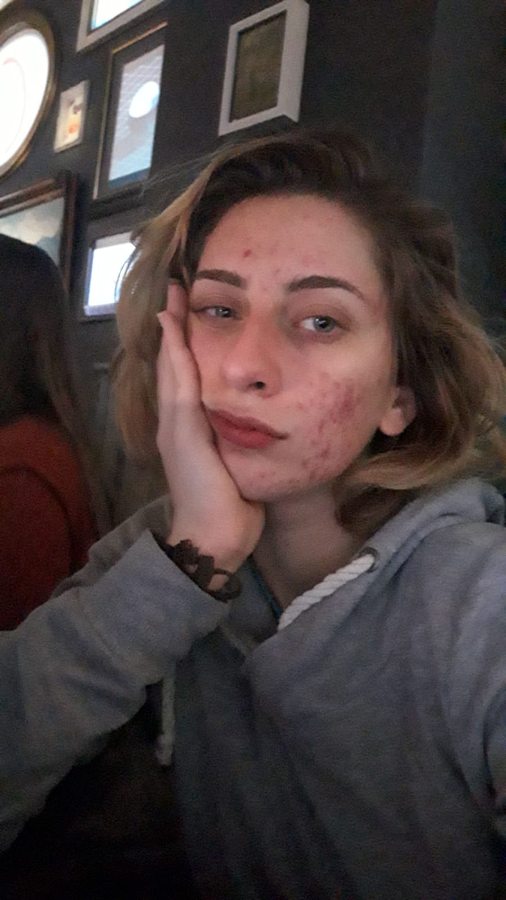
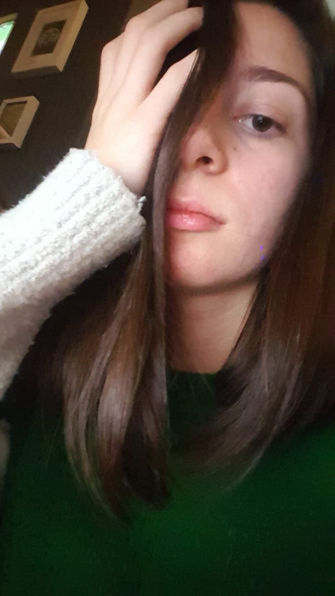
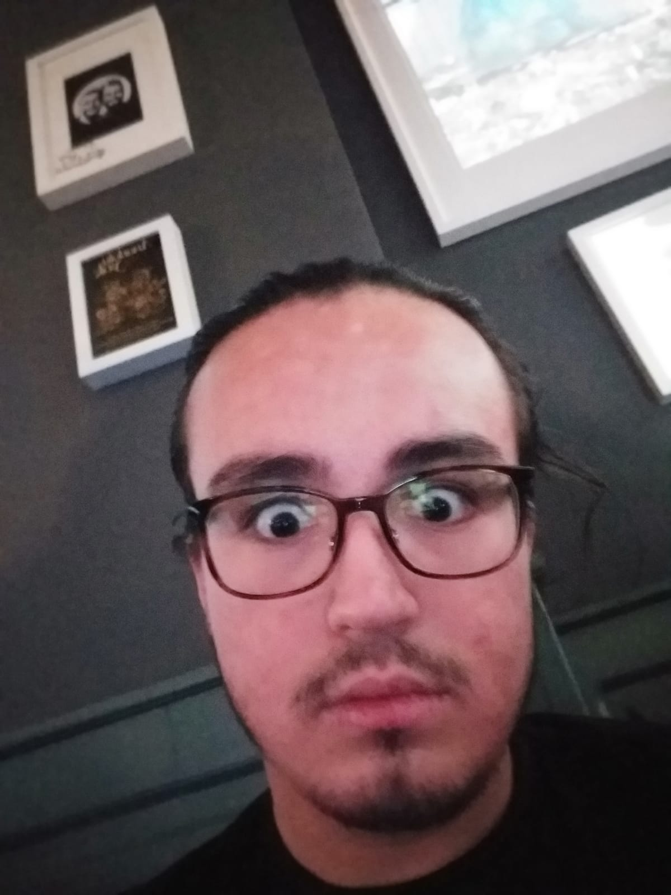
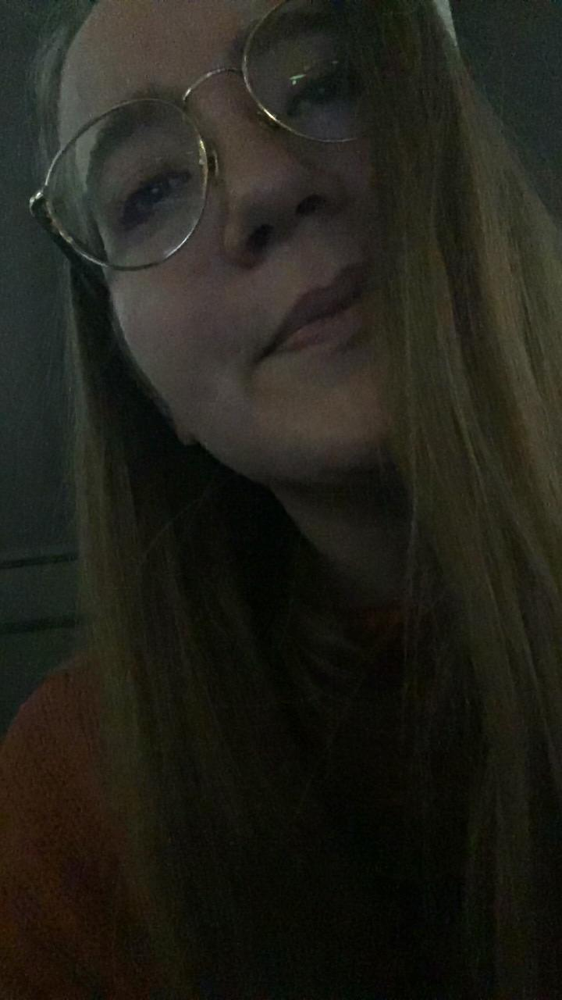
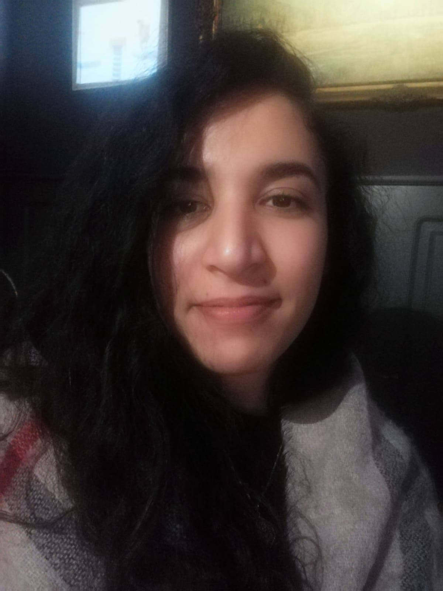
History
EESTEC (Electrical Engineering STudents' European assoCiation)
EESTEC Avrupa’nın 23 ülkesindeki 49 farklı şehirde komitesi bulunan ve Avrupa’daki öğrencileri bir araya getirmeyi amaçlayan, kar amacı gütmeyen öğrenci topluluğudur.
EESTEC 1986 yılında Hollanda’nın Eindhoven kentinde kurulmuştur. 1995 yılında Zürih’e taşınan merkez, 2002 yılından itibaren tekrar Hollanda’ya geri dönmüştür ve halen Delft şehrinde bulunmaktadır. Organizasyon, Avrupa’daki ülkelerde şehir tabanlı olarak düzenlenmiş yerel komitelerin birlikte ve karşılıklı olarak çalışmasına dayalıdır..
EESTEC’ in Kuruluş Amacı
Bu organizasyonun birinci amacı değişik ülkelerde benzer alanlarda eğitim gören öğrencilerin seminerler kanalıyla teknik bilgi birikimini arttırmak olduğu gibi, bu öğrencilerin birbirleriyle olan iletişimi güçlendirmek ve aralarında fikir alışverişi yapmalarını sağlamaktır. Ayrıca bu organizasyonun diğer bir amacı da öğrencilere diğer ülkelerdeki eğitim sistemini ve endüstriyi tanıtmaktır. Bunlara ek olarak EESTEC uluslararası kariyer ve iş olanaklarını da mümkün kılmaktadır. Örneğin hâlihazırda devam eden projelerden biri Avrupa çapında tüm üyelerinin bulunduğu bir veritabanı oluşturarak, beraber çalışılan şirketlerin kolaylıkla aradıkları elemanı bulmalarını sağlamaktır. Ayrıca bu sene başlamış olan staj projesi ile üyelerine staj yeri bulma çalışmalarında da bulunmaktadır.
Etkinlikler
Çalıştay (Workshop): EESTEC’in teknik bilgi birikiminin yayılması ve paylaşılmasını sağladığı etkinlikler çalıştaylardır. Bir hafta boyunca endüstri ve akademi dünyasından gelen profesyonellerin verdiği seminerlerde yeni teknolojiler, özellikli mühendislik uygulamaları ve mühendisliğin sosyal yönleri işlenmekte, küçük gruplar halinde tartışmalar yapılmaktadır. İşlenen konular üzerinde uygulamalar gerçekleştirilmektedir. Ayrıca kültürel ve sosyal paylaşım imkânları sunulmaktadır.
Değişim Programları (Exchange): İki veya daha çok yerel komitenin karşılıklı olarak birbirlerini yaklaşık on gün süreyle ziyaret ettiği etkinliklerdir. Bu değişim programları esnasında misafir komiteler ev sahibi ülkenin üniversite sistemi, endüstrisi ve kültürü hakkında bilgi sahibi olurlar.
Uluslararası Motivasyon Haftasonu(IMW): Kişisel gelişim üzerine yapılan ve EESTEC üyelerini bir araya getirmeyi amaçlayan genellikle 2 gecelik olan etkinlik.
Kongre (Congress): Yıllık genel kongre üye şehirlerden birinde gerçekleşir. Bu kongre esnasında EESTEC ile ilgili güncel sorunlar tartışılır ve karara bağlanır.Yılda 2 tane olur.
EESTEC Uluslararası’nın sitesine bu bağlantıdan ulaşılabilir: eestec.net